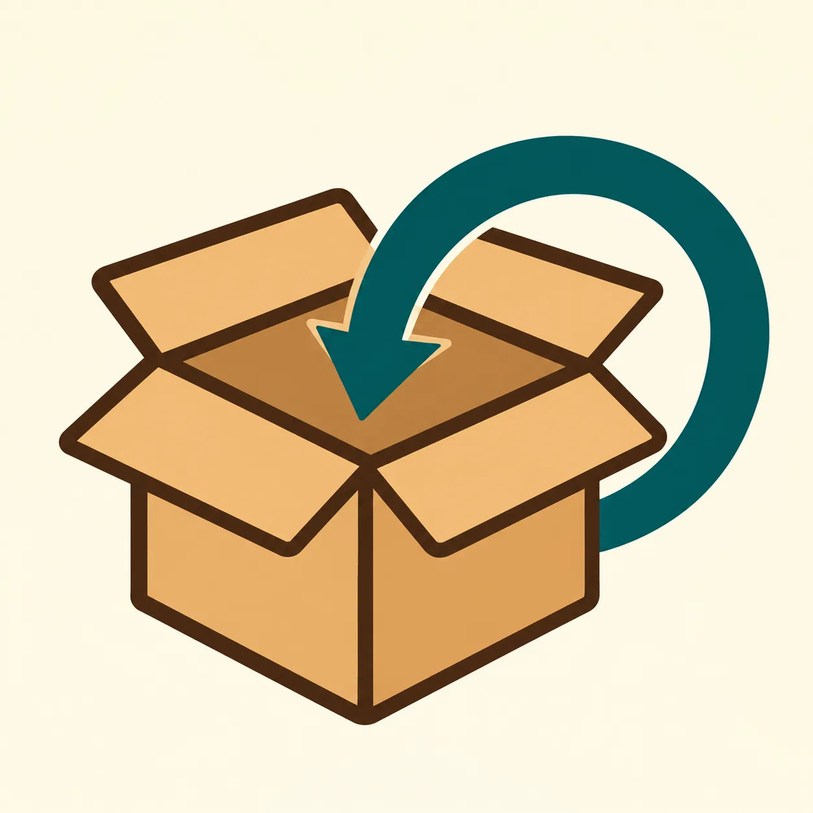
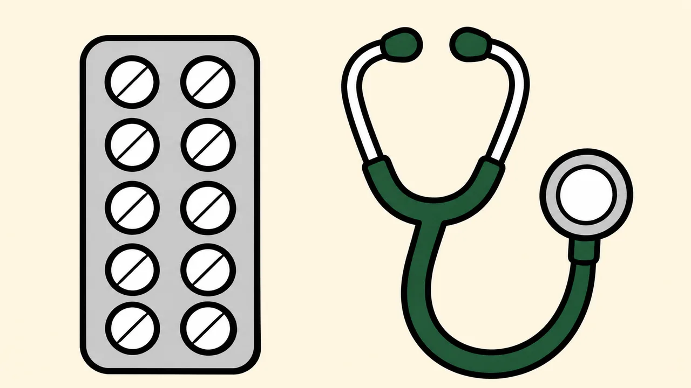

新着記事
31本
楽天ETCカード年会費の判定月初年度と次年度で異なる 2026-11-28・クレジットカード楽天ETCカードの年会費が無料になる条件と請求月の確認方法年末調整の訂正源泉徴収票の交付前なら会社で直せる過ぎたら確定申告で5年間2026-11-27・税・制度・NISA年末調整の訂正はいつまで？会社で直せる期限と確定申告のやり方JCBの繰上返済支払区分で方法が変わる発行会社と入金費用を確認
2026-11-28・クレジットカード楽天ETCカードの年会費が無料になる条件と請求月の確認方法年末調整の訂正源泉徴収票の交付前なら会社で直せる過ぎたら確定申告で5年間2026-11-27・税・制度・NISA年末調整の訂正はいつまで？会社で直せる期限と確定申告のやり方JCBの繰上返済支払区分で方法が変わる発行会社と入金費用を確認 2026-11-27・クレジットカードJCBの繰上返済のやり方は？ATM・銀行振込・引落を比較住宅ローン控除初年度は会社員も確定申告借入先の方式で書類が変わる
2026-11-27・クレジットカードJCBの繰上返済のやり方は？ATM・銀行振込・引落を比較住宅ローン控除初年度は会社員も確定申告借入先の方式で書類が変わる 2026-11-27・税・制度・NISA住宅ローン控除の初年度の必要書類は？確定申告の準備と手順ドコモのプラン変更、オンラインと窓口どっち？11月30日締切で仕分け残り3日で仕分け
2026-11-27・税・制度・NISA住宅ローン控除の初年度の必要書類は？確定申告の準備と手順ドコモのプラン変更、オンラインと窓口どっち？11月30日締切で仕分け残り3日で仕分け 2026-11-27・スマホ・通信ドコモのプラン変更、オンラインと窓口どっち？11月30日締切で仕分け証券口座の乗っ取り10月は168件、9月の3.9倍今日やる対策3つ（無料・5分）
2026-11-27・スマホ・通信ドコモのプラン変更、オンラインと窓口どっち？11月30日締切で仕分け証券口座の乗っ取り10月は168件、9月の3.9倍今日やる対策3つ（無料・5分） 2026-11-26・税・制度・NISA証券口座の乗っ取り対策3つ｜10月は168件で9月の3.9倍にネット通販の返品まず返品特約を確認明示がなければ受取日を含む8日以内が原則
2026-11-26・税・制度・NISA証券口座の乗っ取り対策3つ｜10月は168件で9月の3.9倍にネット通販の返品まず返品特約を確認明示がなければ受取日を含む8日以内が原則 2026-11-26・福袋・セール福袋2027 カフェ・食べ物9社の期限と中身｜ミスドは12月11日からくら寿司22商品値上げ・34商品値下げ11月27日から
2026-11-26・福袋・セール福袋2027 カフェ・食べ物9社の期限と中身｜ミスドは12月11日からくら寿司22商品値上げ・34商品値下げ11月27日から 2026-11-25・福袋・セールくら寿司の値上げは11月27日から、値下げも含む価格改定一覧福袋2027の週次まとめ本日ビックカメラ抽選締切ケンタは明日11/26まで2026-11-25・福袋・セール福袋2027まとめ｜本日ビックカメラ抽選締切、ケンタは明日ドコモ値上げは12月1日から年16,500円増2026-11-25・スマホ・通信ドコモ値上げは12月1日から｜家族4人で年16,500円増、移り先で消す預金保険制度銀行ごとに合算一般預金等は元本1,000万円まで2026-11-25・税・制度・NISA預金保険の1000万円は銀行ごと？支店・定期預金の合算を解説Ankerブラックフライデー2026全25商品の価格表と最大53%OFFの正体11/27 0:00〜12/7 23:59
2026-11-25・福袋・セールくら寿司の値上げは11月27日から、値下げも含む価格改定一覧福袋2027の週次まとめ本日ビックカメラ抽選締切ケンタは明日11/26まで2026-11-25・福袋・セール福袋2027まとめ｜本日ビックカメラ抽選締切、ケンタは明日ドコモ値上げは12月1日から年16,500円増2026-11-25・スマホ・通信ドコモ値上げは12月1日から｜家族4人で年16,500円増、移り先で消す預金保険制度銀行ごとに合算一般預金等は元本1,000万円まで2026-11-25・税・制度・NISA預金保険の1000万円は銀行ごと？支店・定期預金の合算を解説Ankerブラックフライデー2026全25商品の価格表と最大53%OFFの正体11/27 0:00〜12/7 23:59 2026-11-25・福袋・セールAnkerブラックフライデー2026の価格表、全25商品と最大53%の正体楽天PINKカードカード年会費は永年無料有料優待は任意で申込み2026-11-24・クレジットカード楽天PINKカードの違いは？楽天カードと年会費・有料優待を比較生命保険料控除一般の新契約は上限6万円23歳未満の扶養親族がいる場合
2026-11-25・福袋・セールAnkerブラックフライデー2026の価格表、全25商品と最大53%の正体楽天PINKカードカード年会費は永年無料有料優待は任意で申込み2026-11-24・クレジットカード楽天PINKカードの違いは？楽天カードと年会費・有料優待を比較生命保険料控除一般の新契約は上限6万円23歳未満の扶養親族がいる場合 2026-11-24・税・制度・NISA生命保険料控除の上限2026年版、23歳未満の扶養で変わる額ドコモ11月30日までの手続きまとめ11/30に3締切2026-11-24・スマホ・通信ドコモ11月30日までの手続きまとめ｜ミニ・大盛り・ワンコインセルフメディケーション税制医療費控除と比較控除額で選ぶ
2026-11-24・税・制度・NISA生命保険料控除の上限2026年版、23歳未満の扶養で変わる額ドコモ11月30日までの手続きまとめ11/30に3締切2026-11-24・スマホ・通信ドコモ11月30日までの手続きまとめ｜ミニ・大盛り・ワンコインセルフメディケーション税制医療費控除と比較控除額で選ぶ 2026-11-23・ふるさと納税ふるさと納税サイト比較2026｜寄付額別の実質還元早見表年末の実効還元率楽天とAmazonの上限楽天8,500pt・Amazon10,000pt2026-11-22・ポイント・還元年末ブラックフライデー還元率比較｜楽天とAmazonの上限ふるさと納税の上限額所得割額の2割特例控除の上限2026-11-22・ふるさと納税ふるさと納税の上限額、計算方法を総務省の公式資料で確認スマホの乗り換え（MNP）手数料は無料2026-11-21・スマホ・通信携帯電話の乗り換えMNP、やり方と手数料ふるさと納税12月31日まで年内に支払い完了2026-11-21・ふるさと納税ふるさと納税、12月31日までにやることクレジットカード締め日・支払日カード会社3社を比較2026-11-21・クレジットカードクレジットカードの締め日・支払い日、3社で比較Amazon × d払い100%還元抽選5,000名・12/7まで
2026-11-23・ふるさと納税ふるさと納税サイト比較2026｜寄付額別の実質還元早見表年末の実効還元率楽天とAmazonの上限楽天8,500pt・Amazon10,000pt2026-11-22・ポイント・還元年末ブラックフライデー還元率比較｜楽天とAmazonの上限ふるさと納税の上限額所得割額の2割特例控除の上限2026-11-22・ふるさと納税ふるさと納税の上限額、計算方法を総務省の公式資料で確認スマホの乗り換え（MNP）手数料は無料2026-11-21・スマホ・通信携帯電話の乗り換えMNP、やり方と手数料ふるさと納税12月31日まで年内に支払い完了2026-11-21・ふるさと納税ふるさと納税、12月31日までにやることクレジットカード締め日・支払日カード会社3社を比較2026-11-21・クレジットカードクレジットカードの締め日・支払い日、3社で比較Amazon × d払い100%還元抽選5,000名・12/7まで 2026-11-21・ポイント・還元Amazonのd払い100%還元、上限5,000ptは抽選5,000名12月の電気・ガス代値上げと補助金世帯別に試算2026-11-20・税・制度・NISA電気ガス補助金はいつまで？12月の値上げと合わせ世帯別に試算ヨドバシ福袋2027優遇条件の基準日は終了申込みは11/24 11時から2026-11-20・福袋・セールヨドバシ福袋2027の抽選日程、優遇条件の基準日は終了サンリオ福袋20274,990円全7キャラ共通2026-11-20・福袋・セールサンリオ福袋2027は全7キャラ4,990円で1人交代ゴディバ福袋2027価格据え置き中身が異なる全3種2026-11-20・福袋・セールゴディバ福袋2027は3種類、価格据え置きでも中身は変化Amazonブラックフライデー本番は8日間7つのセール企画2026-11-20・福袋・セールAmazonブラックフライデー2026、7つの企画の買い方新NISAの年内枠現金積立の締切SBI 12/16・楽天 12/172026-11-19・税・制度・NISA新NISAの年内枠を使い切る手順｜クレカ積立の締切後でも間に合う方法Amazonブラックフライデー2026エントリーは今日10時から対象は12/7まで2026-11-19・福袋・セールAmazonブラックフライデー2026、エントリーは今日10時開始
2026-11-21・ポイント・還元Amazonのd払い100%還元、上限5,000ptは抽選5,000名12月の電気・ガス代値上げと補助金世帯別に試算2026-11-20・税・制度・NISA電気ガス補助金はいつまで？12月の値上げと合わせ世帯別に試算ヨドバシ福袋2027優遇条件の基準日は終了申込みは11/24 11時から2026-11-20・福袋・セールヨドバシ福袋2027の抽選日程、優遇条件の基準日は終了サンリオ福袋20274,990円全7キャラ共通2026-11-20・福袋・セールサンリオ福袋2027は全7キャラ4,990円で1人交代ゴディバ福袋2027価格据え置き中身が異なる全3種2026-11-20・福袋・セールゴディバ福袋2027は3種類、価格据え置きでも中身は変化Amazonブラックフライデー本番は8日間7つのセール企画2026-11-20・福袋・セールAmazonブラックフライデー2026、7つの企画の買い方新NISAの年内枠現金積立の締切SBI 12/16・楽天 12/172026-11-19・税・制度・NISA新NISAの年内枠を使い切る手順｜クレカ積立の締切後でも間に合う方法Amazonブラックフライデー2026エントリーは今日10時から対象は12/7まで2026-11-19・福袋・セールAmazonブラックフライデー2026、エントリーは今日10時開始
2026-11-28・クレジットカード楽天ETCカードの年会費が無料になる条件と請求月の確認方法年末調整の訂正源泉徴収票の交付前なら会社で直せる過ぎたら確定申告で5年間2026-11-27・税・制度・NISA年末調整の訂正はいつまで？会社で直せる期限と確定申告のやり方JCBの繰上返済支払区分で方法が変わる発行会社と入金費用を確認2026-11-27・クレジットカードJCBの繰上返済のやり方は？ATM・銀行振込・引落を比較住宅ローン控除初年度は会社員も確定申告借入先の方式で書類が変わる2026-11-27・税・制度・NISA住宅ローン控除の初年度の必要書類は？確定申告の準備と手順ドコモのプラン変更、オンラインと窓口どっち？11月30日締切で仕分け残り3日で仕分け2026-11-27・スマホ・通信ドコモのプラン変更、オンラインと窓口どっち？11月30日締切で仕分け証券口座の乗っ取り10月は168件、9月の3.9倍今日やる対策3つ（無料・5分）2026-11-26・税・制度・NISA証券口座の乗っ取り対策3つ｜10月は168件で9月の3.9倍にネット通販の返品まず返品特約を確認明示がなければ受取日を含む8日以内が原則
2026-11-26・福袋・セールネット通販の返品はいつまで？返品特約と送料を確認する手順福袋2027 カフェ・食べ物9社の期限と中身ミスドは12/11から2026-11-26・福袋・セール福袋2027 カフェ・食べ物9社の期限と中身｜ミスドは12月11日からくら寿司22商品値上げ・34商品値下げ11月27日から2026-11-25・福袋・セールくら寿司の値上げは11月27日から、値下げも含む価格改定一覧福袋2027の週次まとめ本日ビックカメラ抽選締切ケンタは明日11/26まで2026-11-25・福袋・セール福袋2027まとめ｜本日ビックカメラ抽選締切、ケンタは明日ドコモ値上げは12月1日から年16,500円増2026-11-25・スマホ・通信ドコモ値上げは12月1日から｜家族4人で年16,500円増、移り先で消す預金保険制度銀行ごとに合算一般預金等は元本1,000万円まで2026-11-25・税・制度・NISA預金保険の1000万円は銀行ごと？支店・定期預金の合算を解説Ankerブラックフライデー2026全25商品の価格表と最大53%OFFの正体11/27 0:00〜12/7 23:592026-11-25・福袋・セールAnkerブラックフライデー2026の価格表、全25商品と最大53%の正体楽天PINKカードカード年会費は永年無料有料優待は任意で申込み2026-11-24・クレジットカード楽天PINKカードの違いは？楽天カードと年会費・有料優待を比較生命保険料控除一般の新契約は上限6万円23歳未満の扶養親族がいる場合2026-11-24・税・制度・NISA生命保険料控除の上限2026年版、23歳未満の扶養で変わる額ドコモ11月30日までの手続きまとめ11/30に3締切2026-11-24・スマホ・通信ドコモ11月30日までの手続きまとめ｜ミニ・大盛り・ワンコインセルフメディケーション税制医療費控除と比較控除額で選ぶ
2026-11-23・税・制度・NISAセルフメディケーション税制と医療費控除の違い、控除額で選ぶ方法ふるさと納税サイト比較2026差は最大8,000円2026-11-23・ふるさと納税ふるさと納税サイト比較2026｜寄付額別の実質還元早見表年末の実効還元率楽天とAmazonの上限楽天8,500pt・Amazon10,000pt2026-11-22・ポイント・還元年末ブラックフライデー還元率比較｜楽天とAmazonの上限ふるさと納税の上限額所得割額の2割特例控除の上限2026-11-22・ふるさと納税ふるさと納税の上限額、計算方法を総務省の公式資料で確認スマホの乗り換え（MNP）手数料は無料2026-11-21・スマホ・通信携帯電話の乗り換えMNP、やり方と手数料ふるさと納税12月31日まで年内に支払い完了2026-11-21・ふるさと納税ふるさと納税、12月31日までにやることクレジットカード締め日・支払日カード会社3社を比較2026-11-21・クレジットカードクレジットカードの締め日・支払い日、3社で比較Amazon × d払い100%還元抽選5,000名・12/7まで2026-11-21・ポイント・還元Amazonのd払い100%還元、上限5,000ptは抽選5,000名12月の電気・ガス代値上げと補助金世帯別に試算2026-11-20・税・制度・NISA電気ガス補助金はいつまで？12月の値上げと合わせ世帯別に試算ヨドバシ福袋2027優遇条件の基準日は終了申込みは11/24 11時から2026-11-20・福袋・セールヨドバシ福袋2027の抽選日程、優遇条件の基準日は終了サンリオ福袋20274,990円全7キャラ共通2026-11-20・福袋・セールサンリオ福袋2027は全7キャラ4,990円で1人交代ゴディバ福袋2027価格据え置き中身が異なる全3種2026-11-20・福袋・セールゴディバ福袋2027は3種類、価格据え置きでも中身は変化Amazonブラックフライデー本番は8日間7つのセール企画2026-11-20・福袋・セールAmazonブラックフライデー2026、7つの企画の買い方新NISAの年内枠現金積立の締切SBI 12/16・楽天 12/172026-11-19・税・制度・NISA新NISAの年内枠を使い切る手順｜クレカ積立の締切後でも間に合う方法Amazonブラックフライデー2026エントリーは今日10時から対象は12/7まで2026-11-19・福袋・セールAmazonブラックフライデー2026、エントリーは今日10時開始